数组数据类型以及基本操作
数组数据类型
-
什么是数组
- 字面理解就是数字的组合
- 准确来说是数据的集合
- 就是将一些数据放在一个盒子里面，按照顺序排好
如:[1,2,"hello",true,false]
由中括号包裹，内部的数据叫元素
数据类型分类
- number、string、Boolean、undefined、null、object、function、array(数组)、BigInt、Symbol、....
- 数组也是数据类型的一种
- 同样分：基本数据类型和复杂数据类型
- 基本数据类型：number、string、 、undefined、null、BigInt、Symbol
- 复杂数据类型：object、function、array(数组)、.....
创建数组
- 与对象一样有两种方法(字面量创建数组和通过构造函数的方法(new一个数组)
- 中括号代表一个数组，数组内的数据叫元素
-
字面量创建数组(最常用)
- 语法：
let 字面量 = []创建一个空数组 - 语法：
let 字面量 = [1,2,3]创建一个内涵元素数组 -
实例
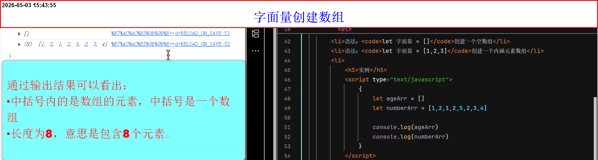
- 语法：
-
构造函数创建数组
- 语法：
let 字面量 = new Array()通过内置函数创建空数组 - 语法：
let 字面量 = new Array(1,"hello",5,true,false)通过内置函数创建内涵元素数组 -
当通过构造函数创建数组，且只有一个参数时，有四种状态(只有构造函数创建数组方法有效)
- 只有一个参数，如果是数值类型，那么意味着，创建长度为参数的数组
- 第一种状态：参数为正整数，正常创建参数为长度的数组
如:let 字面量 = new Array(10),当构造函数方式创建数组，只有一个参数且是正整数数值类型，意思创建内涵10个元素的空数组。length：10 - 第二中状态：参数为非正整数数值类型(注意只有一个参数)，会直接报错，因为非整数不能作为长度
let 字面量 = new Array(15.6),当构造函数方式创建数组，只有一个参数且是非正整数数值类型，会直接报错 - 第三种状态：参数为非数值类型，视为创建该参数为元素的数组，索引是0，
如:let 字面量 = new Array("hello"),当构造函数方式创建数组，只有一个参数且是非数值类型，意思创建内涵hello这个元素 - 第四种状态：参数为0，视为创建空数组，
如：let 字面量 = new Array(0)，当构造函数方式创建数组，只有一个参数且是0，意思创建空数组
- 后续可以通过增，删，改的操作，对内部元素做改变
-
实例
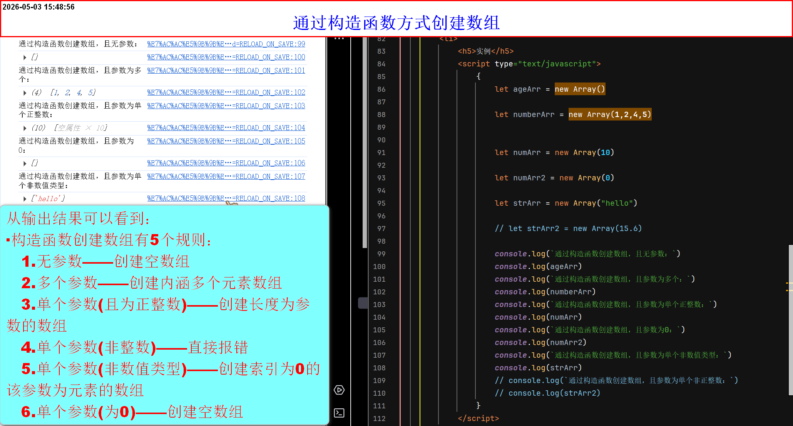
- 语法：
基本操作
-
长度(length)
- 通过点语法+length
- 语法：
字面量.length -
length关键字(可读可写)
- 读：读取数组长度，并返回结果
- 写：规定数组长度，会先通过索引定位，截断后续的元素，并返回结果
- length写的方式，常用途是：清空数组(
字面量.length = 0)
-
实例
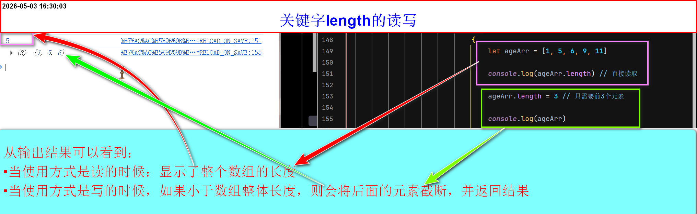
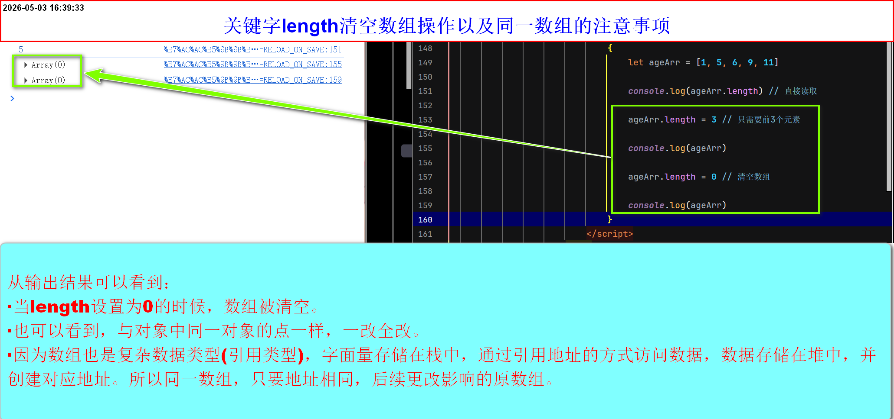
索引概念(及其重要)
- 从左往右，从零开始，每个元素依次自增
-
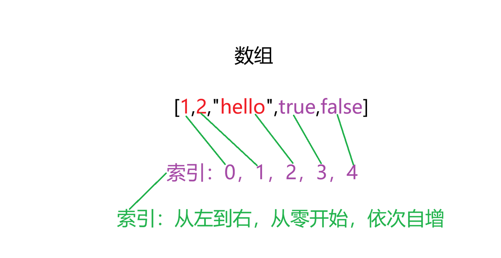
查操作
-
通过索引的方式
- 语法：
字面量[需要查找元素的索引] - 如果输入的索引超过上限，则返回的值是：
undefiend -
实例
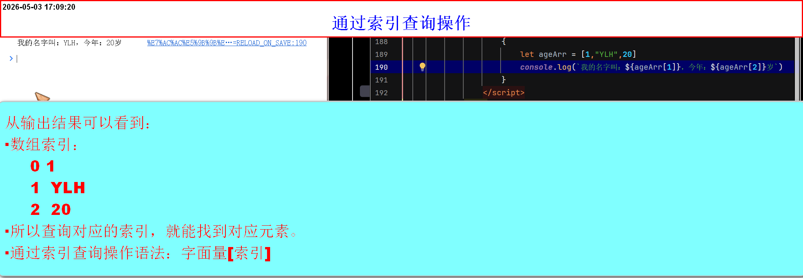
- 语法：
改操作
-
通过索引的方式
- 语法：
字面量[索引](索引元素不能为undefined) = 新元素 - 语法：
字面量[索引](当索引元素为undefined，执行增操作) = 新元素 - 关于复杂数据类型扩展
-
实例
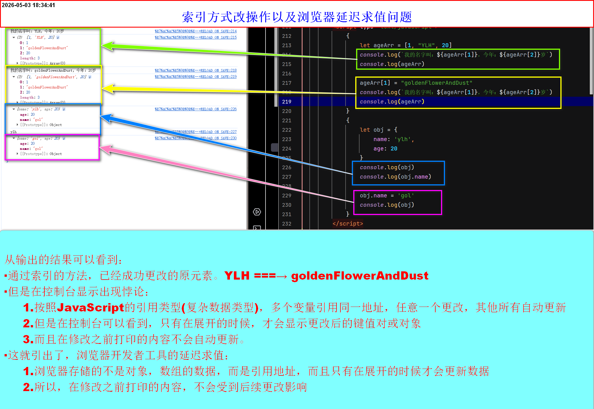
- 语法：
增操作
-
通过索引的方式
- 语法：
字面量[索引](索引元素最好是undefined，不然就是改操作了) = 元素 - 不是增加元素的标准操作(因为它只能再最后面添加元素，跨索引添加没有意义)
-
实例
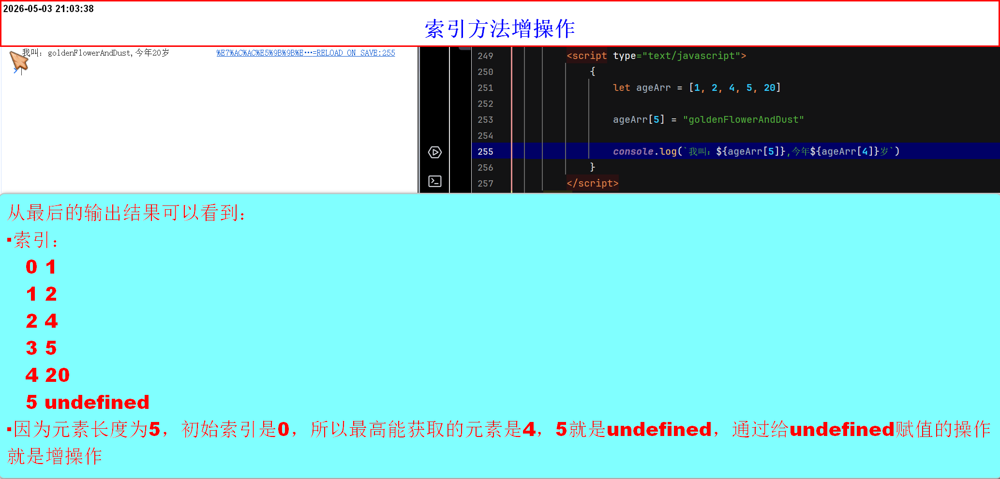
- 语法：
删操作
-
通过索引的方式(不存在)
- 用
delete arr[索引]虽然会删除该元素的值，但会留下empty空位，不计入 length 但数组长度不变，不是真正的“删除”。 - 真正删除数组元素应使用
splice() 方法，例如arr.splice(索引, 1)会删除指定位置的元素，后续元素前移，长度减一。
- 用
数组的遍历
-
方法一：for循环遍历数组
- 语法：
for(let(var、const) 初始化变量 = 0 ; 初始化变量<字面量.length; 改变逻辑){代码块} -
如：
let ageArr = [1, 2, "hello"]
for(let i = 0; i < ageArr.length; i++){
初始化变量，条件判断，改变逻辑缺一不可
console.log(ageArr[i]) 依次打印所有元素
} -
实例
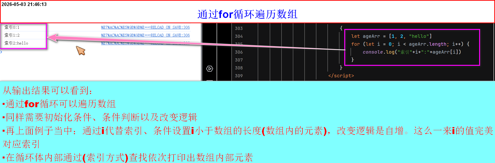
- 语法：
-
方法二：通过for....of遍历数组
- 语法：
for(let(var、const) 自定义变量接受元素 of 字面量) - 特点：获取的值，而非索引，所以直接打印即可
-
如：
let ageArr = [1, 2, "hello"]
for (let i of ageArr) { //自定义变量接受的是元素而非索引
console.log(i) //所以直接打印即可
} -
实例
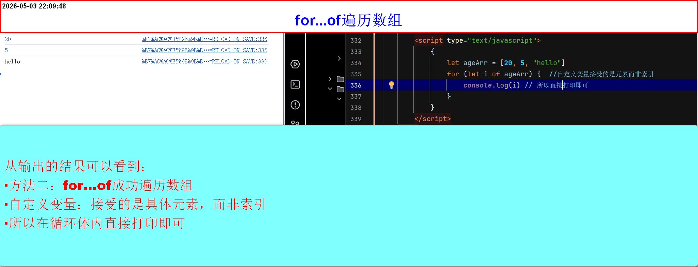
- 语法：
-
方法三：forEach方法
- 语法：
字面量.forEach((value[值],idx[索引])=>{代码块}) - 语法：
字面量.forEach(function(value[值],idx[索引]{代码块}) - forEach 的参数是一个回调函数(可以使用箭头函数和function)
-
例1(通过箭头函数)：
let ageArr = [1, 2, "hello"]
ageArr.forEach((value ,idx)=>{
// value接受的是元素(自定义变量) ，idx接受的是索引(自定义变量) 采用的箭头函数
console.log(`索引${idx}:${value}`) //用的是模板字符串
})
例2(通过function)：
let ageArr = [1, 2, "hello"]
ageArr.forEach(function(value,idx){
//value接受的是元素(自定义变量) ，idx接受的是索引(自定义变量) 采用的function
console.log(`索引${idx}:${value}`) //用的是模板字符串
}) -
实例
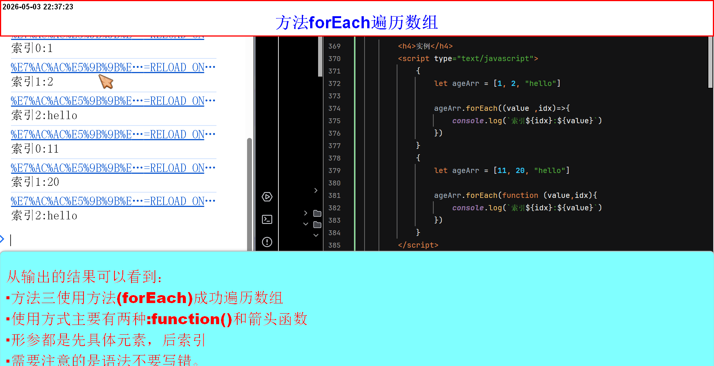
- 语法：
数组的拷贝问题
- 数组也是复杂数据类型
- 同样分栈存储和堆存储
- 栈的工作：存储字面量和引用地址
- 堆的工作：存储数据和生成地址
-
想要拷贝数组，不能直接将原数组赋值给新数组
- 直接赋值，则它们是同一数组，其中一个更改，另一个也会跟着改
- 这就是，多个变量引用同一数组(同一地址)，其中一个更改，其余均更改
- 解决办法：使用遍历的方式，挨个将元素浅拷贝如新数组，这样它们不在同一地址，不会改变原数组中的元素
- 具体：不同数据类型的存储
- 因为是浅拷贝，所以只对基本数据类型有效
其他补充知识点
-
数组也是复杂数据类型(引用类型)
- 字面量存储在栈中，通过引用地址的方式访问数据，数据存储在堆中， 并创建对应地址。所以同一数组，只要地址相同，后续更改影响的原数组。
-
关于复杂数据类型扩展
- 对象、数组是引用类型。多个变量指向同一地址时，通过任何一个变量修改内部值，所有指向该地址的变量都会同步变化。这是 JS 的规则，与打印无关。
-
控制台特有行为（延迟求值）
- 当你在代码中执行 console.log(obj) 时，控制台不会立即将对象的内容“快照”下来，而是保存了该对象的引用。当你点击展开这个打印项时，控制台会去读取对象当前的状态。 因此，如果你在打印之后修改了对象，展开后看到的是修改后的值。
-
这会导致一种错觉：
- 好像打印出来的对象会自动“更新”，其实不是，是你展开的时候才去读的实时值。
-
对比
- 如果使用模板字符串直接访问属性（如 ${obj.name}），那是在代码执行时立即取值，之后修改不影响已经输出的字符串。
- 如果直接打印对象本身（console.log(obj)），控制台展示的是一个引用，展开后才取最新值。
-
总结
- 控制台的延迟求值只是调试工具的便利特性，不会改变 JavaScript 本身的引用传递规则。代码逻辑仍然遵循“修改原对象，所有引用都会变”。